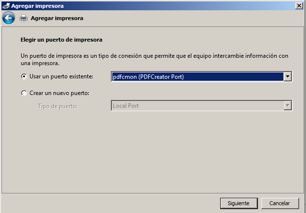
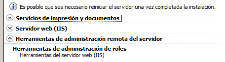
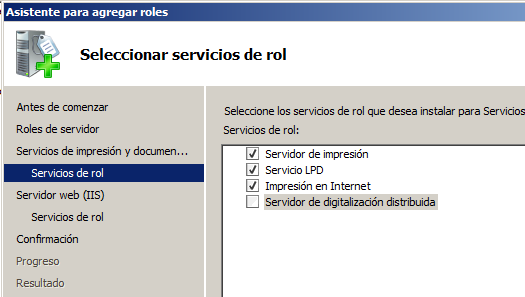
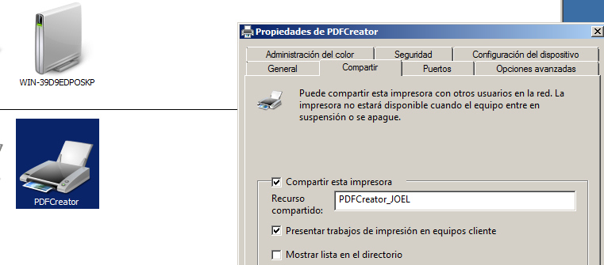
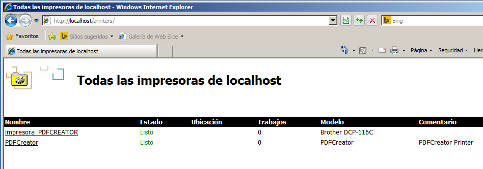
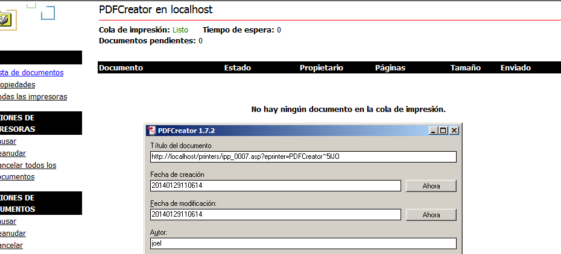
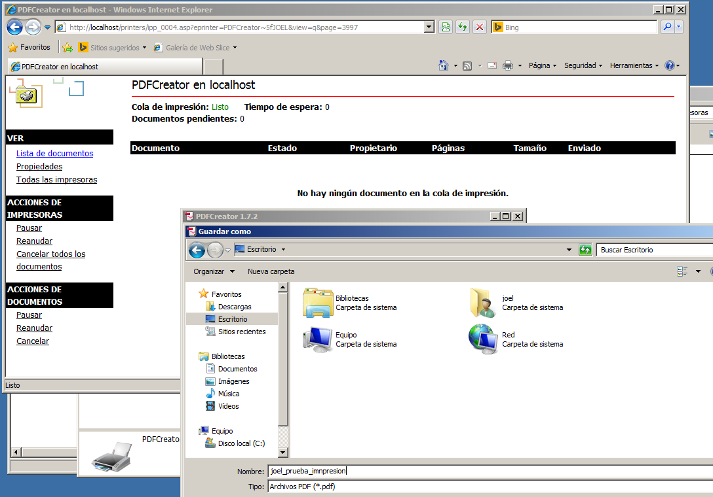
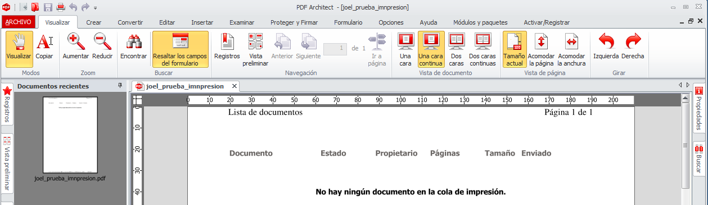

- Módulo: Sistemas Operativos
- Título del trabajo Servidor de Impresión
- Componentes del grupo: Joel Chávez Perdomo
- Curso Académico: 2013/2014
- Fecha de entrega: 1 de Enero de 2014
Instalamos el PDFCreator en modo entándar para esta práctica.
También tendremos que instalar un Servidor de Impresión junto con (IIS) y las Herramientas de administración remota.
En los servicios de impresión marcar las 3 primeras casillas.
Compartimos los recursos para que esten accesibles desde los clientes.
Entramos en http://localhost/printers y comprobamos que el recurso PDFCreator está compartido y podemos acceder a la impresión.
En el mismo navegador, en la pestaña de la impresora o en Archivos > Imprimir... , imprimimos la pagina web actual para una prueba de impresión.
<  